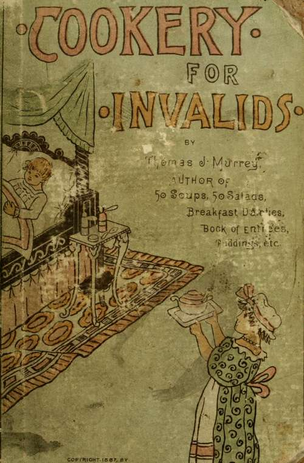

Cookery For Invalids | by Thomas J. Murrey
This little handbook is offered to housekeepers, in order that they may readily understand the popular dietetic formulas so universally recommended by physicians, many of whom neglect the details of preparing the nutriment they prescribe, owing probably to the fact that all physicians are not cooks, as many of them were in olden, and all of them should be in modern, times.
| Title | Cookery For Invalids |
| Author | Thomas J. Murrey |
| Publisher | White Stokes & Allen |
| Year | 1887 |
| Copyright | 1887, White Stokes & Allen |
| Amazon | Cookery for Invalids |
By Thomas J. Murrey, Author of "Fifty Soup," "Fifty Salads," "Breakfast Dainties" "Puddings and Dainty Desserts," "The Book of Entries," etc, etc.
 Introductory
Introductory- This little handbook is offered to housekeepers, in order that they may readily understand the popular dietetic formulas so universally recommended by physicians, many of whom neglect the details of p...
- How To Make Broths
- Beef Broth A well-made beef broth contains more nutriment than the old-fashioned beef tea, and is therefore the best of the many nourishing formulas known to the sick-room. In appearance, also, ...
- How To Make Gruels
- Oatmeal Gruel Oatmeal, in any form, should not be given to patients who are suffering from diarrhoeal diseases or of irritable mucous membrane. While it is rich in nutriment, it is not always a goo...
- How To Make Toast
- Toast is very palatable and digestible when properly prepared. Many seem to think that they have made toast when they brown the outside of a slice of bread. Have they ? The object in making toast i...
- How To Make Diet Drinks
- Frappe Champagne renders important service in irritable states of the stomach, especially in sea-sickness, vomiting of pregnancy, yellow-fever, cholera morbus, and cholera. To produce frappe champagne...
- How To Make Fruit Drinks
- Currant-Jelly Water Dissolve a teaspoon-ful of currant-jelly in a goblet of cold water, and add one cake of cut sugar. Currant Water Simmer gently for ten minutes a pint of fresh-picked curra...
- How To Make Milk
- Skimmed Milk In cases of intestinal disorders skimmed milk is better than pure milk, and in cases of disease, when fats must be omitted, it is very useful. The milk should stand twenty-four hour...
- Fruits As Food And Medicine
- Of all the fruits with which we are blessed, the peach is the most delicious and digestible. There is nothing more palatable, wholesome, and medicinal than good ripe peaches. They should be ripe, but ...
- Eating Before Sleeping
- A general impression prevails that to eat before going to bed is an injurious and altogether an unwise habit. Much depends on the individual habits of persons ; in the case of one accustomed to dine a...
- Miscellaneous Food
- My only serious objection to late suppers is that, unless caution is exercised, one is apt to disarrange the stomach by drinking too much cold liquid, thereby preventing the food from digesting. A Wel...